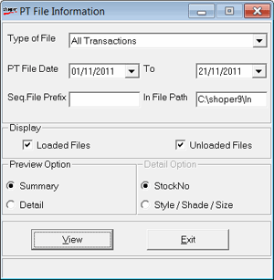

A PT File is an ASCII (text file) containing the details of a consignment despatched from a despatch center to any store. Shoper Distributor has the provision to create PT files against invoices or Delivery Challans raised. TT Files on the other hand contain details of inter-store transfers. These files are created at the point of origin of the consignment.
This option is useful to retrieve the details of items dispatched from the supplier prior to update or the actual receipt of the item (if the file is received before the goods). You can see the items wise details or the summary of items present in the PT files received and also the status of the file as to whether it has been loaded to the database or not.
Additional provision is provided to retrieve information which has been synchronized from Head Office. The details of the data source are also provided in the PT file information screen.
How to reach: Stock > PT File Information
The PT File Information window is displayed as shown.

Type of File: Displays list of different type of transaction files available in Shoper 9.
PT-File Date: Specify the date range you want to view PT file information.
Seq.File Prefix: Enter sequential file prefix number to view the report
In File Path: Enter the path of the file which you want to view
Display: Consists of two check box, i.e., Loaded Files and Unloaded Files. One or both can be selected for report generation
Preview Option: Consists of two options, i.e., Summary and Details, select any one.
Detail Option: Consists of two options, i.e., based on StockNo and Style/ Shade/ Size, select any one.
Note: If no information matches with the user specified requirement in the above form, then a message No data found will be displayed in the lower left side of the window.